3DFusion: Cuttable Interiors from Two Cut Families — Single-Image Diffusion Priors Lifted onto an O-Voxel Lattice
Prior-guided statistical completion: two or three unposed cross-section photographs per cut family, of different specimens, are treated not as views to be inverted but as the two marginal slice distributions of a volume, and the volume is recovered as their product of experts on a cylindrical lattice that turns radial anatomy into stationary stripes — carried on a decoupled occupancy lattice that is cut in closed form
Preprint · supersedes the O-Voxel carrier paper
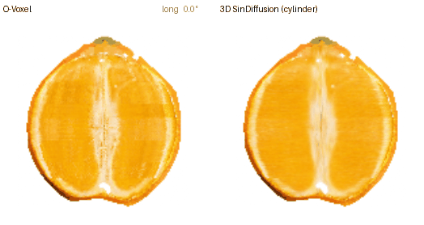
The asset read at every angle. The lifted orange of section 3, read by a longitudinal plane turning about the polar axis, then a transverse plane sweeping along it, then an oblique plane tilting from the transverse family to the longitudinal one through angles no photograph supervised. The colour is the photographs’, and no plane shows a seam, a spoke or a band. Nothing is generated at cut time: the volume is baked once into the lattice and read.
Abstract
Interactive physical applications — virtual planar slicing, cross-sectional inspection, fracture dynamics — require an explicit, physically coherent 3D interior. Existing formulations rely either on volumetric scans or on continuous primitives such as 3D Gaussian Splatting, which suffer boundary bleeding, attenuated membranes and unpainted voids when sliced. We show that a realistic, cuttable interior can be synthesised from as few as two or three unposed photographs across two orthogonal cut families, longitudinal and transverse, captured from different physical specimens.
We reformulate this severely underdetermined problem not as an ill-posed instance reconstruction but as category-level joint-distribution recovery from two low-dimensional slice marginals. Each photograph family supplies a 2-D patch distribution learned by a lightweight single-image diffusion prior, and the volume is sampled as their product of experts across all of its slices — with no 3-D data and no 3-D training. To reconcile the object’s anisotropic anatomy with patch priors, the volume is represented on a cylindrical coordinate lattice \(A[r,\varphi,z]\). This geometric inductive bias canonicalises non-stationary radial structures — segment membranes, the central axis — into stationary, axis-aligned stripes, makes both cut families exact slices of one state, and removes lossy resampling from inside the chain. A directly fitted discrete occupancy carrier guides the synthesis by pinning the macroscopic layout through an in-chain low-pass constraint, decoupling global shape from local histology.
Evaluated on held-out photographs of unseen specimens, the lifted orange reaches a DreamSim distance of 0.087 against the fitted carrier’s 0.113 and FruitNinja’s 0.154, and unobserved oblique cuts show no seam. Across seven objects one program, with no per-object setting but the polar axis, improves six over the carrier; the seventh, whose fitted interior is already near the real floor, is a loss and is analysed. Against the two released generative baselines the lift is the best column wherever the carrier itself is sound, and the two objects where it is not are reported as losses. Baked back into the discrete lattice, the assets keep closed-form, machine-precision planar cutting (8.6–16.5 ms) with zero unpainted voids: an accessible, end-to-end capture path to cuttable, simulation-facing volumetric assets.
1 Introduction
Standard 3D surface reconstruction methods fundamentally yield hollow shells. While visually compelling for novel view synthesis, they fail downstream physical and interactive applications — virtual planar slicing, non-destructive cross-sectional inspection, the geometric stage of fracture simulation — which require an explicit, physically coherent, high-fidelity internal volume. When an object is sliced, the revealed cross-section must exhibit crisp internal anatomy — membranes, fibres, pulp — rather than blurred approximations or empty voids.
Reconstructing realistic 3D interiors without volumetric scans remains an open challenge. Existing formulations each carry an inherent limitation:
- Generative score distillation (e.g. FruitNinja [3]) averages score gradients over diffusion timesteps, an inherent low-pass filter that washes out fine structural membranes, and needs a diffusion model fine-tuned per object.
- Volumetric continuous primitives (e.g. 3D Gaussian Splatting [1]) lack an exact planar intersection: slicing degrades into heuristic primitive culling over a thick slab, with boundary bleeding and up to 8.29% unpainted voids at 2K resolution.
- Direct voxel fitting (the carrier of this work, section 3.1) cuts in closed form but knows only the supervised planes; between them it holds a block-tiled average, and unphotographed angles are unconstrained.
This paper breaks the impasse: an explicit, cuttable interior is synthesised from as few as two or three unposed photographs across two orthogonal cut families, longitudinal and transverse, taken of different physical specimens.
1.1 The problem, re-posed: joint recovery from marginal slice priors
Two or three photographs of longitudinal cuts and two or three of transverse cuts, unposed, of different specimens, cannot invert to a volume. A reviewer’s first question is the right one: is a result from that little anything but overfitting or hallucination? Posed as instance-level reconstruction the question has no answer, because there is no instance — the cut specimens are different objects, and no single ground-truth interior exists to have been recovered.
We pose it differently. The interior of a natural or manufactured object is not an unstructured solid: it is organised about a growth axis, with structural anisotropy along and around it — segments converging on a columella, layers stacked on a base, toroidal symmetry. Two orthogonal cut families sample that anisotropy in complementary marginals: the transverse family carries the circumferential and radial distribution \((r,\varphi)\), the longitudinal family the axial and radial one \((s,z)\), with \(s\in[-E,E]\) the signed radius along the plane. What two or three photographs per family supply is therefore not a set of views but two marginal patch distributions, and the object to be recovered is the joint distribution that satisfies both marginal priors at once — formulated as a product of experts over all slices of the volume. This is category-level distribution learning from sparse marginal slices, and it answers a question that held-out photographs can measure: whether an unseen cut of an unseen specimen respects the visual statistics of the family.
1.2 Why two or three photographs are sufficient
Recovering an explicit volume from so few exemplars rests on three facts, each measured in section 4.
- Patch statistics saturate early. A photograph is few as an image and many as patches: two or three cross-sections at 512 px contain tens of thousands of local neighbourhoods, and single-image diffusion models [66, 67] establish that the patch distribution of one image supports synthesis at any extent. The prior is never asked to invent a global layout.
- The coordinate system canonicalises non-stationary geometry. In Cartesian coordinates a radial membrane is a differently oriented structure at every azimuth and a different organisation at every radius; no patch prior holds that, and every Cartesian slice-diffusion method inherits the deficit [72, 73]. On the cylindrical lattice \(A[r,\varphi,z]\) the membranes are parallel stripes and the columella a vertical band: radial anatomy becomes stationary, axis-aligned features accessible to a patch-level prior of small capacity. Both cut families become exact slices of one state, and nothing is resampled inside the chain.
- Mutual intersection closes the unobserved degrees of freedom. Every cell of the volume lies on one slice of each family and is constrained by both priors at once. The product of two low-dimensional marginals is a far smaller set than either: the degrees of freedom a single family would leave open — along its own normal — are exactly the ones the other family closes. On the orange, an oblique plane between the two families, supervised by no photograph, shows no seam (section 4.4).
1.3 Cross-specimen variation: decoupling layout from histology
The exemplar photographs come from different specimens of different sizes and shapes and are combined without registration. Macroscopic layout is decoupled from microscopic histology by construction:
- The fitted carrier (section 3.1) anchors the macro-structure: the shell, the silhouette, the position of the columella and pith, the colour.
- The diffusion priors are asked only for micro-structure — tissue texture and local organisation. Conditioning the chain on the carrier through a low-pass constraint (ILVR [70]) absorbs the specimens’ size and shape differences into the low frequencies.
What the priors learn from three specimens is what those specimens share: the histology, not the individual. The result is an accessible capture path — cut an object twice, photograph it a handful of times — to a cuttable volumetric asset synthesised directly from sparse, unposed cross-sections.
1.4 Primary contributions
- A slice-marginal formulation for 3D interiors. Interior generation is reformulated from an ill-posed instance reconstruction into category-level joint-distribution recovery from sparse marginal slices: the volume as a product of experts over 2-D slice marginals, synthesising coherent internal tissue with no 3-D data, 3-D training or 3-D model (sections 3.2–3.3).
- A cylindrical inductive bias for anisotropic anatomy. Mapping the volume onto a cylindrical lattice \(A[r,\varphi,z]\) canonicalises non-stationary radial and circumferential structure into stationary, axis-aligned stripes, removes lossy resampling from the diffusion chain, and lets lightweight single-image patch priors hold the global organisation of the interior; the Cartesian alternatives are measured and fail on the transverse family (section 4.2).
- Layout-conditioned diffusion on a discrete carrier. A directly fitted discrete occupancy carrier enters as a non-destructive data term: its low-frequency layout is anchored by an in-chain constraint (ILVR [70]), its shell is never written, and a radius-dependent leadership rule puts each family in charge where it sees what the other cannot, decoupling macroscopic anatomy from microscopic tissue synthesis (sections 3.3–3.5).
- Measured validation and cuttable assets. On seven objects with declared splits, the lift improves six over direct fitting on held-out photographs and is the best column against both released generative baselines wherever the carrier is sound; the two objects where it is not are reported as losses. Baked back into the discrete lattice, the assets keep closed-form, machine-precision planar cutting (8.6–16.5 ms) with zero unpainted voids and the carrier’s solver interface, an acquisition path toward interactive volumetric simulation (section 4).
- The carrier, carried over. The decoupled two-level lattice, the pose-free supervision and the closed-form planar cut of the superseded paper are restated in section 3.1 and their measurements in section 4.5.
2 Related work
2.1 3D interior generation from 2D priors
Synthesising internal 3D structure from 2D priors has largely gone through score distillation [27] and depth-conditioned diffusion [26, 28]. For interiors, FruitNinja [3] fine-tunes a diffusion model per object to supervise cut cross-sections and instantiates the volume with 3D Gaussians [1]; distillation averages gradients over timesteps and attenuates membranes and fibres. In medical imaging, perpendicular 2D priors [72] and position-aware score blending [73] run pretrained 2-D denoisers on orthogonal slices of a Cartesian volume and combine their estimates; SyncDreamer [74] and MVDream [75] enforce multi-view agreement between 2-D diffusion samples through attention across views. Solid texture synthesis [29] models volumes by stationary neighbourhood statistics, which by construction ignores axial convergence.
This work composes two single-image priors [66, 67] — the only kind that learns from two or three photographs — as a product of experts [76, 77] over the slices of a cylindrical state, so that the combination happens on one shared \(x_t\) rather than by averaging finished or re-sliced estimates, and so that the anisotropy of the object (radial membranes, an axial columella) is axis-aligned structure the priors can learn. The fitted lattice enters as a low-pass constraint inside the chain [70] and a shell that is never written, in the manner of inpainting with a known region [78]. No attention crosses the families; the intersections do.
2.2 Volumetric primitives against discrete latent lattices
Volumetric representations have evolved from dense voxel graphics and sparse grids [56–58, 60, 61] to continuous radiance fields [2, 16, 17] and structured 3D Gaussian Splatting [12–14]. InFusion [30] and InnerGS [31] leverage Gaussians for internal scene reconstruction. Continuous primitives possess infinite support and ill-defined boundaries: planar cutting through 3D Gaussians degrades into heuristic thresholding over a thick slab — in the reference implementation, an integral 5.63 coarse cells deep — producing boundary bleeding and unpainted void artefacts, up to 8.29% at 2K resolution, when primitive footprints fall below pixel scale. Neural implicit fields [2] require dense forward queries and provide no closed-form planar boundary. The carrier used here decouples the volume into a discrete two-level occupancy lattice carrying a single 8-dimensional latent per cell; replacing internal splatting primitives with lattice interpolation gives exact planar cuts, eliminates void artefacts, and reduces compressed storage to 10.0 MiB.
2.3 Surface extraction and dual grid encodings
Isosurface extraction traditionally relies on Marching Cubes [4] or feature-sensitive dual contouring [5–7], where dual vertices minimise quadric error metrics [8] to preserve sharp features without staircase artefacts [64]. TRELLIS.2 [10, 11] introduced the field-free Flexible Dual Grid [63], placing dual vertices inside active voxels to compactly encode complex boundaries. The carrier adopts the official encoder [10] strictly for the outer hull, keeping the internal lattice decoupled; the exposed cross-section polygons and the dual-grid boundary are submitted to one differentiable rasteriser (nvdiffrast) in a single pass.
2.4 Virtual cutting and physical simulation
Interactive cutting has been explored in surgical simulation and fracture mechanics [48–51]. Classical approaches — the virtual node algorithm [48], polyhedral tetrahedral splitting [49], extended finite elements [50] — rely on pre-existing volumetric meshes, absent in photogrammetric assets. PhysGaussian [18] and VR-GS [22] couple Gaussians with the Material Point Method [19–21]; GaussianFluent [23] densifies internal Gaussians for mixed-material fracture [52]. The lattice provides integer connectivity, mass conservation and sign-based contact predicates directly, and a cut in 8.6–16.5 ms; the lifted interior changes the colour of its cells and nothing else, so that interface is unchanged.
3 Method
Figure 2 is the whole of it, and Figure 3 is the same pipeline as the states of one object’s arrays. The carrier is fitted first (section 3.1, restated from the superseded paper). Its interior is then sampled anew from a product of two single-image diffusion priors on a cylindrical state, with the carrier’s layout and shell as data terms (sections 3.2–3.4), and written back into the carrier’s cells (section 3.5). The cut operator and the solver interface are the carrier’s and are not touched.
The pipeline. Two photograph families become two single-image priors, the longitudinal one on canonical-frame images and the transverse one on polar strips. The carrier is fitted first and sampled into one cylindrical state with its interior mask. One reverse chain then denoises both families on that same state: each family reads its exact slices, the two clean estimates are combined by the radius rule of equation (6), the carrier’s low-pass is pinned on the longitudinal planes and its shell is never written, and the state is re-noised for the next step. At the end the interior is written into the carrier’s cells once and read by the carrier’s own closed-form cut.
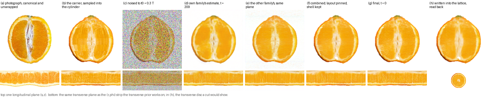
The pipeline as states of the orange’s own arrays. Top, one longitudinal plane; bottom, one transverse plane as the polar strip the transverse prior works on. (a) a training photograph, canonical and unwrapped; (b) the carrier sampled into the cylinder — the block tiling is visible; (c) the state noised to \(t_0=0.3\,T\), the outside under the same noise; (d) at one step of the chain, each family’s own clean estimate; (e) the other family’s estimate read on the same plane — the two agree on layout and colour and differ in what each can see, the columella above, the membranes below; (f) the combination of equation (6) with the carrier’s low-pass pinned and its shell kept; (g) the final state; (h) the interior written into the lattice cells once and read back through the carrier’s own sampling, the transverse one as the disc a cut would show.
3.0 Notation
| symbol | domain | meaning |
|---|---|---|
| \(\Omega,\;\partial\Omega\) | \(\subset \mathbb{R}^3\) | the solid and its boundary |
| \(\mathcal{V}_0,\;\mathcal{V}_1\) | \(h_c,\; h_f = h_c/2\) | coarse lattice; boundary refinement |
| \(C_i,\;\mathbf{f}_i,\;g_\theta\) | \(\mathbb{R}^8 \to [0,1]^3\) | cell, its latent, the shared decoder |
| \(\Pi_k=(\mathbf{n}_k,d_k)\) | \(S^2 \times \mathbb{R}\) | plane, \(\mathbf{n}_k^\top\mathbf{x}+d_k=0\) |
| \(A[r,\varphi,z]\) | \(3\times N_r\times N_\varphi\times N_z\) | the cylindrical state; \(x_t\) its noised version at level \(t\) |
| \(S_{\varphi_k},\;S_{z_j}\) | selections | longitudinal slice at azimuth \(\varphi_k\); transverse slice at height \(z_j\) |
| \(p_L,\;p_T\) | \(\epsilon_L,\;\epsilon_T\) | the two single-image priors and their denoisers |
| \(\bar\alpha_t\) | \((0,1]\) | the DDPM signal fraction; \(x_t=\sqrt{\bar\alpha_t}\,x_0+\sqrt{1-\bar\alpha_t}\,\epsilon\) |
| \(w(r)\) | \([w_\infty,1]\) | longitudinal weight at radius \(r\) |
| \(\Phi_\sigma\) | low-pass | Gaussian blur of width \(\sigma\) on a plane |
3.1 The carrier: a decoupled lattice, fitted without poses, cut in closed form
Let \(\Omega \subset \mathbb{R}^3\) be a bounded solid with boundary \(\partial\Omega\). The carrier is an axis-aligned two-level hierarchy \(\mathcal{V} = \mathcal{V}_0 \cup \mathcal{V}_1\): the coarse level spans the bounding box at spacing \(h_c = L/125\), and the fine level refines only the boundary band at \(h_f = h_c/2\). The dual-grid exterior carries a dual vertex and a split weight in each active surface voxel; each interior cell stores one latent \(\mathbf{f}_i \in \mathbb{R}^8\) and no rendering primitive. A value at \(\mathbf{x}\) is interpolated over the neighbouring cells and decoded by a shared MLP:
Pose-free cross-specimen supervision. Given an unposed collection of transverse and longitudinal cross-sections of different specimens, the latents and the decoder are optimised without recovering camera poses. In-plane rotation of transverse sections is resolved by circular cross-correlation of angular luminance profiles, and the discrete assignment of photographs to planes together with the inter-family alignment by minimising the discrepancy along the chords in which transverse and longitudinal planes intersect — solved exactly by enumeration, offline. During training a plane renders a section with silhouette \(\alpha_j\); a similarity transform from second-order moments warps the exemplar to the current geometry, isolated by a stop-gradient so that the geometry fit is a calibration rather than a parameter of the loss:
with the nominal depth of every plane replaced by a random variable so that the supervised supports union to a slab, and \(\mathcal{L}_{\mathrm{sec}}\) an SSIM, pixel and band-distribution term over crops inside the face’s own silhouette. No perceptual network enters the objective. What this fits is exactly what section 3.2 keeps: the layout and colour of the interior, the skin, and a texture that is an average over specimens on the supervised planes and a block-tiled average between them.
Closed-form planar cutting. Cells crossed by a plane \(\Pi\) are selected in parallel by the separating-axis test, \(\mathcal{B} = \{ i : |\mathbf{n}^\top\mathbf{c}_i + d| \le \tfrac{1}{2}h\sum_a|n_a| \}\); within each, the twelve cell edges straddling the plane are solved for their exact roots, \(\mathbf{v}_e = \mathbf{a}_e + t_e(\mathbf{b}_e-\mathbf{a}_e)\), \(t_e = -(\mathbf{n}^\top\mathbf{a}_e + d)/\mathbf{n}^\top(\mathbf{b}_e-\mathbf{a}_e)\), sorted into one convex polygon per cell. Face-adjacent cells share their roots exactly, so the union is closed and 2-manifold (Proposition 1 of the carrier paper), the cost is \(\mathcal{O}(|\mathcal{B}|)\) (Proposition 2), and every vertex satisfies its plane equation to \(8.88\times10^{-16}\). Vertex colours come from equation (1); after section 3.5 they come from the lifted interior through the same equation. Figure 4 shows the operator’s four states on real data.

The carrier’s cut, as four states of its own lattice. (a) the plane against 770,182 solid cells, of which 17,855 satisfy the crossing test; (b) one crossed cell, its twelve edges, the roots and the convex polygon they bound; (c) the sign field over one slice, labelled into two components; (d) the exposed face, coloured by the interior field. This operator is untouched by the rest of the paper; what changes is the colour it reads.
3.2 The interior prior: a product of two single-image priors over slices
The evidence about the inside is two marginal patch distributions, one per cut family, each learned from two or three photographs of different specimens. The assumption that connects them to a volume is the one stated in section 1.1: a volume \(x\) is real if every longitudinal slice of it lies in the longitudinal family’s patch distribution and every transverse slice in the transverse family’s. As a prior that is a product of experts [77] over all slices — the joint that commits to nothing beyond the two marginals and their agreement on the intersections —
whose score is a sum over the slices through each voxel,
Two facts make (5) computable with nothing but 2-D models. A single-image diffusion model [66] — a denoiser with no attention and a receptive field of a few dozen pixels — learns the patch distribution of its exemplars rather than the exemplars, which is what two or three photographs can support and what (4) asks for. And a slice of a Gaussian-noised volume is a Gaussian-noised image at the same level: if \(x_t = \sqrt{\bar\alpha_t}\,x_0 + \sqrt{1-\bar\alpha_t}\,\epsilon\) with \(\epsilon\) white in 3-D, then \(S x_t = \sqrt{\bar\alpha_t}\,S x_0 + \sqrt{1-\bar\alpha_t}\,S\epsilon\) with \(S\epsilon\) white on the slice. The 2-D denoisers therefore apply to the 3-D chain unchanged. There is no 3-D training and no 3-D data.
The approximation in (5) is the usual one [76]: the noised marginal of a product is not the product of noised marginals, and each expert’s score already explains the noise, so the two contributions at a voxel are combined with weights that sum to one. Where the weights come from is the content of section 3.3; that they are applied to one \(x_t\) is what distinguishes this from averaging two finished samples, which blurs, and from re-slicing two separate chains through a grid, which blurs and drifts.
3.3 The cylinder: both families as exact slices of one state
Let the state be \(A[r,\varphi,z]\), \(N_r=128\), \(N_\varphi=512\), \(N_z=256\), with \(r\in[0,E]\) at the extent of the longitudinal photographs’ canonical frame, \(\varphi\in[0,2\pi)\), and \(z\in[-E,E]\) on the rows of that frame. A longitudinal plane at azimuth \(\varphi_k\) is the \((s,z)\) image made of column \(k\) for \(s>0\) and column \(k+N_\varphi/2\), reversed, for \(s<0\): a \(256\times256\) image in exactly the framing the longitudinal prior was trained at. A transverse plane at height \(z_j\) is the \((r,\varphi)\) image \(A[:,:,j]\), a \(128\times512\) polar strip. Both are selections, not resamplings: nothing is interpolated inside the chain, and both families denoise the same \(x_t\). The mapping is the method’s geometric inductive bias: it canonicalises the object’s non-stationary radial structure into stationary, axis-aligned features, which is what lets a patch prior of small capacity, trained on three strips, hold the global organisation of the membranes.
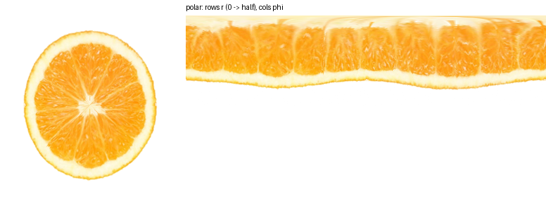
Why polar. A transverse photograph and its unwrap into \((r,\varphi)\), rows \(r\) from the axis outward, columns \(\varphi\). The segment membranes — thin radial lines whose organisation is global and beyond any patch in Cartesian coordinates — are a row of parallel stripes here, and the rind is a horizontal band. The transverse prior is trained on these strips (Figure 5); the wrap-around in \(\varphi\) is a free and exact augmentation.
One step. At level \(t\), each family predicts its noise on every one of its planes and hence its clean estimate, \(\hat x_0^L = (x_t - \sqrt{1-\bar\alpha_t}\,\epsilon_L)/\sqrt{\bar\alpha_t}\) assembled from the longitudinal slices and \(\hat x_0^T\) from the transverse ones. The product prior’s step is one line,
the longitudinal family leading at the axis, where it sees the columella as a continuous strip and the transverse family sees only a disc, and the transverse family leading away from it, where it sees the membranes as stripes and the longitudinal family sees them edge-on. \(R_0 = 0.15\,E\), \(w_\infty = 0.1\); both are read off the sweeps of section 4.2 and are the same for every object. The rule also settles the polar singularity. The cylinder never evaluates \(r=0\): the first row of the polar strip sits at \(r=E/256\), half a cell from the axis, and the strip wraps in \(\varphi\) (the polar prior is trained with a wrap-around augmentation and the write-back interpolates across the seam). Near the axis the 512 azimuth columns crowd into a handful of cells — the polar sampling is far denser than the object there — and \(w(0)=1\) hands that region to the longitudinal family, whose \((s,z)\) planes pass through the axis as ordinary pixels with no singularity at all. The pole is therefore never read from the polar strip alone, and the columella, which is a strip to the longitudinal prior and a disc to the transverse, is drawn by the family that sees it whole. The state is then re-noised deterministically [69] with the noise direction consistent with the combined estimate, \(\bar\epsilon = (x_t - \sqrt{\bar\alpha_t}\,\hat x_0)/\sqrt{1-\bar\alpha_t}\), \(x_{t'} = \sqrt{\bar\alpha_{t'}}\,\hat x_0 + \sqrt{1-\bar\alpha_{t'}}\,\bar\epsilon\).
Data terms. The carrier supplies two things the patch prior cannot. Its shell is observed and is never written: outside the interior mask the state is the carrier’s value under the forward noise of the current level, with one fixed noise draw, so every plane looks like a properly noised image and the interior is generated against a true boundary [78]. Its layout — the columella’s position, the pith band, the colour — is pinned by ILVR [70] on every longitudinal plane at every step: \(\hat x_0 \leftarrow \hat x_0 - \Phi_\sigma(\hat x_0) + \Phi_\sigma(A^{\mathrm{carrier}})\) with \(\sigma = 16\) px, which is above the 4–8 px scale of the carrier’s block tiling and below that of anything the prior is asked to generate. A patch prior has no global layout of its own — from 90% noise it makes blobs (Figure 7) — and this is where the layout comes from; it is also why the chain starts at \(t_0 = 0.3\,T\) rather than from noise: the less of the carrier’s structure the prior is asked to reinvent, the better (section 4.2).
input carrier volume \(A^{\mathrm{c}}\) and interior mask \(M\) sampled into the cylinder; priors \(\epsilon_L,\epsilon_T\); \(t_0\)
output the interior \(A\)
1 \(x \leftarrow \sqrt{\bar\alpha_{t_0}}\,A^{\mathrm{c}} + \sqrt{1-\bar\alpha_{t_0}}\,\epsilon_{\mathrm{fix}}\) // one noise draw, kept for the outside
2 for \(t\) from \(t_0\) down to 0, 100 steps
3 \(\hat{x}_0^{L} \leftarrow\) denoise every longitudinal slice of \(x\) with \(\epsilon_L\); \(\hat{x}_0^{T} \leftarrow\) every transverse slice with \(\epsilon_T\)
4 \(\hat{x}_0 \leftarrow w(r)\,\hat{x}_0^{L} + \big(1-w(r)\big)\,\hat{x}_0^{T}\) // equation (6)
5 \(\hat x_0 \leftarrow \hat x_0 - \Phi_\sigma(\hat x_0) + \Phi_\sigma(A^{\mathrm{c}})\) on every longitudinal plane // the carrier's layout
6 \(\hat x_0 \leftarrow M\,\hat x_0 + (1-M)\,A^{\mathrm{c}}\) // the shell is never written
7 \(x \leftarrow \sqrt{\bar\alpha_{t'}}\,\hat x_0 + \sqrt{1-\bar\alpha_{t'}}\,\bar\epsilon\), the outside re-noised with \(\epsilon_{\mathrm{fix}}\)
8 return \(A \leftarrow M\,\hat x_0 + (1-M)\,A^{\mathrm{c}}\), written into the lattice cells once (section 3.5)
3.4 The priors
Each family’s prior is a single-image DDPM [66, 68]: a small U-Net with no attention and no middle block, trained on the family’s two or three canonical-frame photographs, unmasked, at \(256\) px for the longitudinal family and on \(128\times512\) polar strips for the transverse, lr \(5\times10^{-4}\), a linear \(\beta\) schedule of a thousand steps. The photographs are canonicalised on a white background by the same rule for every object — the background colour is read from the corners, so a black-background photograph works — and the object fills 82% of the frame, which is the framing of every slice the prior will see. Two things are not free and were measured (section 4.2). The priors are unconditional. A cross-conditioned variant, each family fed the other’s current view as extra channels with a mild degradation at training, reproduced its condition when given one and collapsed to noise when given none: it had learned to copy, not a prior, and every face that had looked right under it was the carrier’s own layout leaking through the condition channel. Training length is a per-family choice. The longitudinal prior improves to thirty thousand steps; the polar prior memorises its three strips past four thousand and the held-out distance rises with every step after.
3.5 The asset
The interior is written back into the carrier once: every interior cell takes the volume’s colour at its centre, trilinear in \((r,\varphi,z)\) with the wrap in \(\varphi\); every skin cell keeps its fitted colour; the lattice file is rewritten with only the colour of interior cells changed, so the cut operator, the solver interface and every measurement of section 4.5 read the result unchanged. Re-voxelised, the interior differs from the sampled volume by 0.029 on \([-1,1]\), the trilinear round trip that the carrier’s own planes also pay.
4 Experiments
Every candidate is scored the same way. A split is declared per object and per family: with four or more photographs, three train the prior and the rest are held out and never touched; with fewer, all train and the object is scored against its training photographs and flagged as such. Cut faces are canonical-frame slices of the voxel grid at 512 px, and the score is the mean over faces of the DreamSim [62] distance to the nearest held-out photograph, lower better; the real floor is the training photographs scored against the held-out ones. Grid slices rather than the carrier’s renderer, so the absolute numbers are not the carrier paper’s Table 2; the ranking is fair because every row walks the same path. The two released baselines walk the same path: the Gaussian centres of FruitNinja’s six models [3] and of GaussianFluent’s watermelon and cake [23] — the two of their eighteen objects that are also ours — are voxelised with their colour at opacity above 0.1 and closed by the same fill, and their polar axes are read from their occupancy as ours are (GaussianFluent’s watermelon lies along the first lattice axis, its cake along the third; FruitNinja’s apple and cake along the third, the other four along ours). The orange has three held out per family and is where every design choice was measured; the six other objects then run through one program with no setting changed.
4.1 The number the method has to beat
Table 1
| orange, held-out DreamSim ↓ | longitudinal | transverse | mean |
|---|---|---|---|
| real: training photographs against the held-out ones | 0.070 | 0.040 | 0.055 |
| the carrier, fitted directly, no generation | 0.148 | 0.077 | 0.113 |
| FruitNinja [3], released Gaussians | 0.154 | 0.153 | 0.154 |
| two families in separate chains, averaged at the end | 0.151 | 0.133 | 0.142 |
| Cartesian grid, joint chain re-sliced every step | blurred to a blob; scored above the photograph on texture, caught by the 3-px probe and the eye | ||
| Cartesian grid, intersection sync, honest priors | 0.160 | 0.142 | 0.151 |
| the cylinder, section 3.3 | 0.112 | 0.062 | 0.087 |
Table 1 is the comparison. The cylinder is below the carrier on both faces and the mean, with honest unconditional priors and nothing copied; the colour of its flesh is the photographs’ (value 0.962 against 0.961), its horizontal banding is below the photographs’ (0.0068 against 0.0079; the carrier 0.0123), and it has no block tiling. Every Cartesian arm is above the carrier. Figure 6 shows the faces the numbers are distances between.
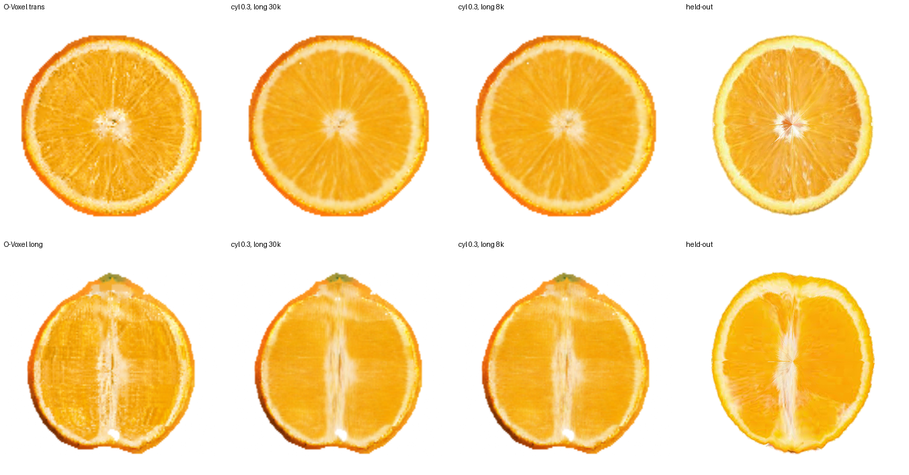
Cut faces in the photographs’ canonical frame. Transverse above, longitudinal below: the carrier, the lift with the longitudinal prior at thirty thousand and at eight thousand steps, and a held-out photograph of a different orange. Segment membranes in the right number, a continuous columella, vesicle grain, the photographs’ colour; faint streaks along \(z\) remain on the longitudinal face.
4.2 Ablations, on the orange
Table 2 changes one thing at a time. The scale of a null result is about 0.002: the starting-noise arms at 0.3, 0.2 and 0.1 differ by less than that among themselves.
Table 2
| configuration | long | trans | mean | observation |
|---|---|---|---|---|
| baseline: cylinder, \(t_0=0.3\), \(w_\infty=0.1\), longitudinal 30k, polar 4k | 0.112 | 0.062 | 0.087 | the proposed configuration |
| starting noise \(t_0 = 0.9\) / 0.7 / 0.5 / 0.3 / 0.2 / 0.1 (8k priors, \(w_\infty=0.3\)) | 0.159 / 0.150 / 0.130 / 0.122 / 0.121 / 0.124 | 0.106 / 0.096 / 0.074 / 0.064 / 0.062 / 0.061 | 0.133 / 0.123 / 0.102 / 0.093 / 0.091 / 0.093 | monotone down to 0.2–0.3, then back toward the carrier |
| longitudinal weight far from the axis \(w_\infty\) = 0.5 / 0.3 / 0.1 (\(t_0=0.9\)) | 0.167 / 0.159 / 0.153 | 0.110 / 0.106 / 0.102 | 0.139 / 0.133 / 0.127 | the longitudinal is the weak family |
| longitudinal prior 8k → 30k (\(t_0=0.3\)) | 0.122 → 0.114 | 0.064 → 0.063 | 0.093 → 0.088 | longer helps this family |
| polar prior 4k / 8k / 15k / 30k (30k long, \(t_0=0.3\)) | 0.112 / 0.113 / 0.121 / 0.126 | 0.062 / 0.063 / 0.064 / 0.073 | 0.087 / 0.088 / 0.092 / 0.100 | and hurts this one: three strips memorised |
| Cartesian, symmetric sync 0.5 / 0.25 / asymmetric / radius-led / stop at 30% | 0.151 / 0.151 / 0.163 / 0.133 / 0.155 | 0.133 / 0.133 / 0.134 / 0.144 / 0.128 | 0.142 / 0.142 / 0.148 / 0.138 / 0.141 | no weighting recovers the transverse face on a grid |
| Cartesian, the copier prior conditioned on the carrier’s own view | 0.129 | 0.103 | 0.116 | as good as it gets by copying the carrier’s layout |
| clamp inside the chain (removed in all rows above) | every channel walked toward grey in proportion to its distance from zero; texture fell with it | a bug, found by looking | ||
| the residual DC shrink: global mean offset / post-hoc low-pass swap / ILVR | over-corrects and clips / colour right, texture −12% / colour right, texture kept | only the in-chain constraint keeps both | ||
How many photographs. Table 3 varies the number of training photographs per family with everything else fixed. One, two and three are scored on the same three held-out photographs per family; five can only be trained by taking two of those, so five and three are scored, separately, on the one photograph per family that remains, with the carrier on the same photograph as the reference. The step from one to two photographs is the large one, the step from two to three is real, and the step from three to five is within the noise of the measurement: with the patch statistics of three specimens the priors have what they can use. One photograph per family already beats the carrier — the volume it reaches is not the photograph copied, since the held-out specimens are different oranges.
Table 3
| photographs per family | held out per family | ours, long / trans / mean | carrier, same photographs | real floor |
|---|---|---|---|---|
| 1 | 3 | 0.121 / 0.065 / 0.093 | 0.148 / 0.077 / 0.113 | 0.101 / 0.042 / 0.071 |
| 2 | 3 | 0.120 / 0.071 / 0.096 | 0.148 / 0.077 / 0.113 | — |
| 3 (the paper’s setting) | 3 | 0.112 / 0.062 / 0.087 | 0.148 / 0.077 / 0.113 | 0.070 / 0.040 / 0.055 |
| 3 | 1 | 0.190 / 0.081 / 0.136 | 0.223 / 0.092 / 0.157 | 0.102 / 0.048 / 0.075 |
| 5 | 1 | 0.192 / 0.084 / 0.138 | 0.223 / 0.092 / 0.157 | — |
The starting noise has a floor and it is not zero. The honest longitudinal prior has no layout of its own: from 90% noise it draws orange blobs on white (Figure 7), and everything global in the result comes from the carrier through the constraint of section 3.3. The held-out distance therefore falls monotonically as \(t_0\) is lowered from 0.9 to 0.3, is flat from 0.3 to 0.1, and must turn back toward the carrier’s 0.113 as \(t_0\to0\). The prior is asked to add texture and local structure under a layout it did not make, and that is what it is good at.
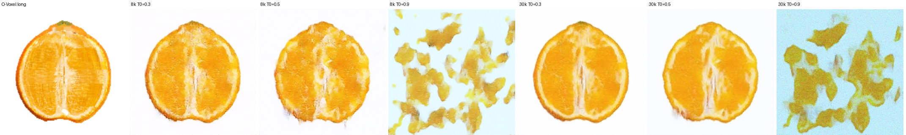
The longitudinal prior alone, in-plane. A carrier slice restored from 30%, 50% and 90% noise by the prior at eight and at thirty thousand steps. At 30–50% the longer prior draws segment walls and a crisp columella where the shorter draws mush; at 90% both collapse — a patch prior has no global layout, and the carrier is where the layout comes from.
Training length is a per-family choice. The longitudinal prior improves from 8k to 30k on every column. The polar prior goes the other way from 4k on: at 30k its transverse faces show segments in a fixed number at even spacing, the layout of its three strips memorised, and the held-out distance rises with every step (Figure 8). Neither curve is the other’s, and a single training length for both would have hidden one of them.
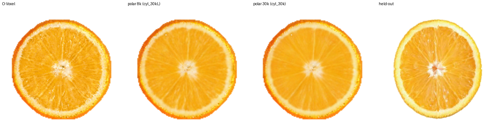
The polar prior overtrained. The carrier, the lift with the polar prior at eight and at thirty thousand steps, and a held-out photograph. At 30k the membranes are fixed in number and evenly spaced: the three training strips, reproduced.
A conditioned prior that was a copier. Before the cylinder, each family’s prior took the other family’s view as three extra input channels, degraded at training by a mild blur and noise. Figure 9 is the test that should have been run first: fed its own input as the condition, every such prior reproduces it; fed zeros, every one collapses to noise blobs. The degradation was too weak and the answer leaked through the condition. Every transverse face that had looked right under those priors was the carrier’s own layout arriving through the condition channel — and in the Cartesian sampler, where the transverse condition came from the longitudinal family, the segment membranes vanished and no sync weight, radius rule or constraint could bring them back (Table 2, the five Cartesian rows). The product of experts requires priors; a copier is not one.
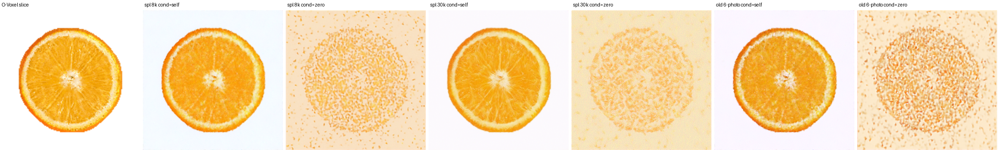
The copier test. A carrier transverse slice restored by three cross-conditioned priors — trained on the declared split at 8k and 30k steps, and on all six photographs — with the slice itself as the condition and with zeros. With the condition, a cross-section; without it, noise. None of them had learned a prior.
What the numbers could not see. Three artefacts on the way were invisible to the texture statistic that was steering the work and were caught by the eye and then by a scorer written for each: a colour shift toward grey (the clamp; a flesh-colour scorer), radial spokes on the transverse face from ninety longitudinal planes at ninety brightnesses (a transverse-view scorer), and horizontal bands on the longitudinal face from per-transverse-plane brightness — the same artefact rotated by ninety degrees, caught by a row-profile scorer. Every number in this section is read beside a composite of the faces; none was believed alone.
4.3 Seven objects, one program
The six other objects run through the same program as the orange: the same canonicalisation, the same split rule, the same priors at the same lengths, the same sampler at the same \(t_0\), \(R_0\) and \(w_\infty\). A family without photographs is inactive in the chain — bread and cake have only longitudinal cuts, the doughnut one transverse. The single per-object declaration is the polar axis, read from the occupancy: the doughnut lies in a vertical plane and its axis is the lattice’s third dimension; every other object keeps the vertical. The bread’s loaf axis is horizontal and its photographs are cross-sections perpendicular to it, which under that convention are longitudinal planes at one azimuth; this is reported, not tuned around.

Every object, both families. Left to right: the lift’s longitudinal face and a photograph, then its transverse face and a photograph. Where a family has no photograph the panel says so. The orange, apple, pomegranate and doughnut keep the carrier’s layout without its tiling; the watermelon’s seeds are smeared along \(z\); the bread and the cake are what a bad fit looks like after smoothing. The carrier’s own faces are in the route page and in the numbers of Table 4.
Table 4
| object | split | carrier | FruitNinja [3] | GaussianFluent [23] | ours |
|---|---|---|---|---|---|
| orange | 3+3 / 3+3 held out | 0.148 / 0.077 / 0.113 | 0.154 / 0.153 / 0.154 | — | 0.112 / 0.062 / 0.087 |
| apple | long vs. training; trans 3+6 held out | 0.283 / 0.289 / 0.286 | 0.278 / 0.281 / 0.280 | — | 0.240 / 0.264 / 0.252 |
| pomegranate | long 3+2 held out; trans vs. training | 0.362 / 0.296 / 0.329 | 0.176 / 0.254 / 0.215 | — | 0.306 / 0.251 / 0.279 |
| watermelon | 3+20 / 3+17 held out | 0.137 / 0.086 / 0.112 | 0.197 / 0.150 / 0.174 | 0.187 / 0.177 / 0.182 | 0.152 / 0.112 / 0.132 |
| bread | long 3+2 held out; no transverse | 0.384 / — | 0.378 / — | — | 0.364 / — |
| cake | long vs. training; no transverse | 0.454 / — | 0.305 / — | 0.354 / — | 0.440 / — |
| doughnut | no longitudinal; trans 1 vs. training | — / 0.256 | not released | — | — / 0.196 |
| Held-out DreamSim, longitudinal / transverse / mean, lower is better; every column through the same grid path. The doughnut is not among FruitNinja’s released objects. GaussianFluent publishes eighteen objects of which two are ours. | |||||
Against the two released baselines the lift is the best column on four objects and loses two: FruitNinja’s per-object fine-tuned model takes the pomegranate by a wide margin, 0.215 against 0.279 and a longitudinal face at 0.176 against our 0.306, and both baselines take the cake, FruitNinja at 0.305 and GaussianFluent at 0.354 against our 0.440. Both losses are on objects whose carrier fits badly — 0.329 and 0.454 — and the lift inherits the carrier: it adds tissue under a layout it does not correct, so where a baseline reconstructs the layout better the lift cannot catch it. The apple and the orange, where the carrier is sound, are won by 0.03 and 0.07 over FruitNinja. Six of seven are below the carrier, and the watermelon is above it, for a reason that is general rather than the watermelon’s: its fitted interior is already near the real floor — 0.112 against a floor of 0.097 — because smooth flesh and discrete high-contrast seeds are what direct fitting does well, and the patch prior smears the seeds along \(z\) and adds texture that is a distance. The bread and the cake are wins of a different kind: their fitted fields are blotches, the lift smooths them, and both remain far from their photographs, which Figure 10 shows plainly.
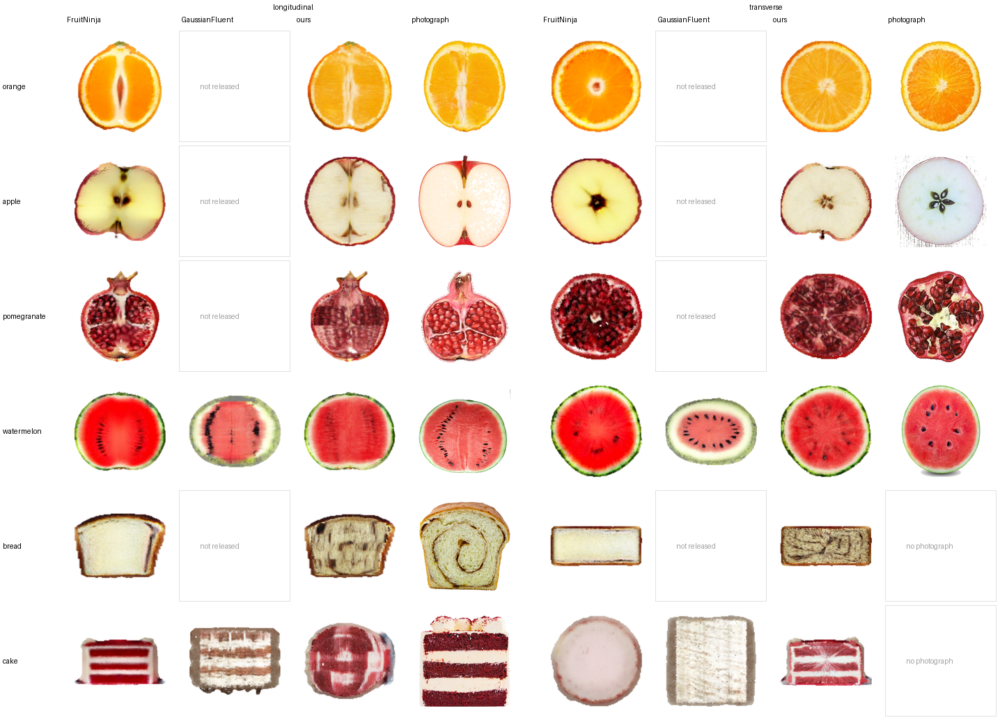
Against the two released baselines, face by face. For every object both baselines released, the longitudinal cut (left) and the transverse cut (right): FruitNinja’s released Gaussians, GaussianFluent’s where it exists, ours, and a held-out photograph, all through the same grid path and canonical frame as Table 4. FruitNinja’s pomegranate carries the aril structure ours inherits blurred from the carrier; both baselines’ cakes have clean layers where ours has the carrier’s blotches; on the orange and the apple FruitNinja’s interiors are smooth where ours has the segment membranes and the vesicle grain of the photographs.
4.4 The unsupervised planes
No photograph supervises an oblique cut, so whether one looks right is a property of the two families’ consistency, not an assumption. On the orange, a plane containing the horizontal axis and tilted 45° from the polar axis shows the same membranes, columella and grain as the two supervised families, with no seam where the families meet; its 15-px texture is 91% of the carrier’s on the same plane, and the carrier’s own tiling is absent. Figure 1 is the continuous version of this: the plane turning through every azimuth and every height.
4.5 The carrier’s numbers, unchanged
The lift changes the colour of interior cells and nothing else, so the carrier paper’s measurements of its geometry hold for the result. Over four planes on each of the seven objects — three axis-aligned and one oblique, offset off the grid — every cut vertex satisfies its plane equation with residual bounded by \(8.88\times10^{-16}\); the extracted surface is 2-manifold with no T-junction; no pixel of a cut face is unpainted at 2048 px; a cut and its rasterisation take 8.6–16.5 ms, following the crossed-cell count \(K\) at 0.72–2.13% of the volume; through one codec the representation is 10.0 MiB against 25.6 and 52.0 for two Gaussian baselines on the same object. Table 5 is the per-object cost, carried over.
Table 5
| object | cells \(N\) | crossed \(K\) | \(K/N\) | triangles | cut (ms) | alignment (ms) | peak (MiB) |
|---|---|---|---|---|---|---|---|
| orange | 770,182 | 14,455 | 1.88% | 86,730 | 16.1 | 42.6 | 1,060 |
| watermelon | 709,368 | 14,078 | 1.98% | 84,468 | 13.7 | 27.0 | 773 |
| apple | 756,905 | 13,558 | 1.79% | 81,348 | 16.5 | 41.9 | 1,098 |
| loaf | 396,075 | 6,940 | 1.75% | 41,640 | 11.1 | 34.6 | 569 |
| cake | 395,613 | 7,263 | 1.84% | 43,578 | 12.0 | 34.1 | 628 |
| pomegranate | 491,350 | 10,483 | 2.13% | 62,898 | 13.7 | 39.4 | 711 |
| doughnut | 544,568 | 3,894 | 0.72% | 23,364 | 8.6 | 21.8 | 369 |
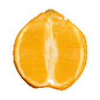
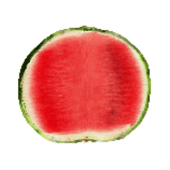
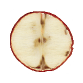
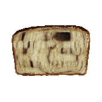
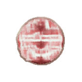
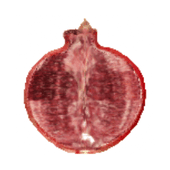
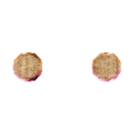
The lifted interiors of all seven objects, a longitudinal plane turning and a transverse plane sweeping, read from the volumes of Table 4.
5 Conclusion and limitations
5.1 Conclusion
Recovering an explicit 3D internal volume from two or three unposed photographs across two cut families cannot succeed if framed as instance-level reconstruction. We have shown that the underdetermined problem is resolved by reformulating it as category-level joint-distribution recovery governed by two orthogonal slice marginals. Sampling a product of experts over the slices of a cylindrical lattice canonicalises non-stationary radial and axial anatomy into stationary, axis-aligned stripes, and lightweight single-image 2-D diffusion priors then synthesise coherent internal tissue without any 3-D data or 3-D training.
Coupled with a directly fitted discrete occupancy carrier that anchors the macroscopic layout and the boundary shell through in-chain frequency constraints, the framework decouples macroscopic anatomy from microscopic tissue synthesis. Evaluated on seven objects under declared splits, held out wherever the photographs allow, the synthesised volumes are closer to photographs of unseen specimens than the fitted carrier on six of them and show no seam at cut angles no photograph supervised; where the carrier fits badly, a per-object fine-tuned generative baseline can still win, and the paper says where. Baked back into the discrete lattice, the assets retain closed-form, machine-precision planar cutting (8.6–16.5 ms) with zero unpainted voids, narrowing the gap between sparse 2-D capture and simulation-facing volumetric assets.
5.2 Limitations and future work
- Anisotropic smearing of discrete compact structures. The inductive bias that makes membranes stationary makes seeds non-stationary: a compact dark object is, to the longitudinal patch prior, a fragment of a vertical row, and at \(t_0=0.3\,T\) the chain elongates it along \(z\) (Figure 10, watermelon). Where an interior is characterised by discrete compact structures rather than by tissue, the prior’s texture is a distance, and the lift loses to the carrier (Table 4). A prior that represents such structures as objects — or a third family of cuts that sees them end-on — is the open extension.
- Objects the carrier already fits. Where direct fitting is near the real floor — the watermelon, 0.112 against 0.097 — there is little for a prior to add and something for it to lose. The method has no switch for this case and the paper proposes none: the watermelon is reported as the loss it is.
- Objects the carrier does not fit. The bread and the cake are blotches before the lift and smoothed blotches after it. The lift inherits the carrier’s ghosting under non-rigid variation between specimens; a chord-conditioned deformation before fitting, proposed for the carrier, remains the natural extension.
- One family. With a single photographed family the product degenerates to one prior on one family of exact slices; the other direction is constrained only by the shared state and the carrier’s layout. Three objects are in this regime and their numbers are against training photographs.
- The axis and the frame. The polar axis is a declaration read from the occupancy; the bread’s is horizontal and the convention does not follow it. The canonical frame assumes an object that fills its own bounding square at 82%; a long loaf does not.
- The resampling floor. The carrier’s own planes lose 7–17% of fine texture through one write-and-read of the grid, at 1283 and at 2563 alike: it is the tent filters of the write and the read, not the resolution. What the prior generates in-plane exceeds what the asset holds by that much, and the asset’s interior cells are coarse. Interior cells at the fine level and a write without a tent filter are the route past it.
- The protocol. Faces are grid slices, not the carrier’s renders; the renderer-protocol numbers of the superseded paper are not comparable to Table 3 and have not been re-taken for the lift.
References
- B. Kerbl, G. Kopanas, T. Leimkühler and G. Drettakis. 3D Gaussian Splatting for Real-Time Radiance Field Rendering. ACM TOG 42(4), 2023.
- B. Mildenhall et al. NeRF: Representing Scenes as Neural Radiance Fields for View Synthesis. ECCV 2020.
- F. Wu and Y. Chen. FruitNinja: 3D Object Interior Texture Generation with Gaussian Splatting. arXiv:2411.12089, CVPR 2025.
- W. E. Lorensen and H. E. Cline. Marching Cubes: A High Resolution 3D Surface Construction Algorithm. SIGGRAPH 1987.
- T. Ju, F. Losasso, S. Schaefer and J. Warren. Dual Contouring of Hermite Data. ACM TOG 21(3), SIGGRAPH 2002.
- S. Schaefer and J. Warren. Dual Marching Cubes: Primal Contouring of the Dual Grid. Pacific Graphics 2004.
- L. P. Kobbelt, M. Botsch, U. Schwanecke and H.-P. Seidel. Feature Sensitive Surface Extraction from Volume Data. SIGGRAPH 2001.
- M. Garland and P. S. Heckbert. Surface Simplification Using Quadric Error Metrics. SIGGRAPH 1997.
- T. Ju. Robust Repair of Polygonal Models. ACM TOG 23(3), SIGGRAPH 2004.
- J. Xiang et al. Native and Compact Structured Latents for 3D Generation. CVPR 2026. TRELLIS.2.
- J. Xiang et al. Structured 3D Latents for Scalable and Versatile 3D Generation. CVPR 2025.
- T. Lu et al. Scaffold-GS: Structured 3D Gaussians for View-Adaptive Rendering. CVPR 2024.
- B. Zhang et al. GaussianCube: A Structured and Explicit Radiance Representation for 3D Generative Modeling. NeurIPS 2024.
- K. Ren et al. Octree-GS: Towards Consistent Real-time Rendering with LOD-Structured 3D Gaussians. IEEE TPAMI, 2025.
- A. Yu, R. Li, M. Tancik, H. Li, R. Ng and A. Kanazawa. PlenOctrees for Real-time Rendering of Neural Radiance Fields. ICCV 2021.
- C. Sun, M. Sun and H.-T. Chen. Direct Voxel Grid Optimization: Super-fast Convergence for Radiance Fields Reconstruction. CVPR 2022.
- T. Müller, A. Evans, C. Schied and A. Keller. Instant Neural Graphics Primitives with a Multiresolution Hash Encoding. ACM TOG 41(4), 2022.
- T. Xie et al. PhysGaussian: Physics-Integrated 3D Gaussians for Generative Dynamics. arXiv:2311.12198, CVPR 2024.
- C. Jiang, C. Schroeder, J. Teran, A. Stomakhin and A. Selle. The Material Point Method for Simulating Continuum Materials. SIGGRAPH Courses 2016.
- A. Stomakhin, C. Schroeder, L. Chai, J. Teran and A. Selle. A Material Point Method for Snow Simulation. ACM TOG 32(4), 2013.
- Y. Hu et al. A Moving Least Squares Material Point Method with Displacement Discontinuity and Two-Way Rigid Body Coupling. ACM TOG 37(4), 2018.
- Y. Jiang et al. VR-GS: A Physical Dynamics-Aware Interactive Gaussian Splatting System in Virtual Reality. SIGGRAPH 2024.
- B. Huang, Y. Chen, R. Lu, G. Zeng, H. Zha, Y. Pei and S. Huang. GaussianFluent: Gaussian Simulation for Dynamic Scenes with Mixed Materials. arXiv:2601.09265, CVPR 2026.
- J. P. Lewis, M. Cordner and N. Fong. Pose Space Deformation: A Unified Approach to Shape Interpolation and Skeleton-Driven Deformation. SIGGRAPH 2000.
- R. W. Sumner, J. Schmid and M. Pauly. Embedded Deformation for Shape Manipulation. ACM TOG 26(3), 2007.
- R. Rombach, A. Blattmann, D. Lorenz, P. Esser and B. Ommer. High-Resolution Image Synthesis with Latent Diffusion Models. CVPR 2022.
- B. Poole, A. Jain, J. T. Barron and B. Mildenhall. DreamFusion: Text-to-3D using 2D Diffusion. ICLR 2023.
- E. Richardson et al. TEXTure: Text-Guided Texturing of 3D Shapes. SIGGRAPH 2023.
- J. Kopf et al. Solid Texture Synthesis from 2D Exemplars. ACM TOG 26(3), 2007.
- H. Liu et al. InFusion: Inpainting 3D Gaussians via Learning Depth Completion from Diffusion Prior. arXiv:2404.11613, 2024.
- E. Liang et al. InnerGS: Internal Scenes Reconstruction and Segmentation with Gaussian Splatting. arXiv, 2025.
- M. Heusel, H. Ramsauer, T. Unterthiner, B. Nessler and S. Hochreiter. GANs Trained by a Two Time-Scale Update Rule Converge to a Local Nash Equilibrium. NeurIPS 2017. (FID)
- M. Bińkowski, D. J. Sutherland, M. Arbel and A. Gretton. Demystifying MMD GANs. ICLR 2018. (KID)
- J. Hessel, A. Holtzman, M. Forbes, R. Le Bras and Y. Choi. CLIPScore: A Reference-free Evaluation Metric for Image Captioning. EMNLP 2021.
- M. J. Chong and D. Forsyth. Effectively Unbiased FID and Inception Score and Where to Find Them. CVPR 2020. (why FID is unusable at the sample sizes here)
- T. Kynkäänniemi, T. Karras, M. Aittala, T. Aila and J. Lehtinen. The Role of ImageNet Classes in Fréchet Inception Distance. ICLR 2023.
- P. Debevec, C. Taylor and J. Malik. Modeling and Rendering Architecture from Photographs. SIGGRAPH 1996.
- C. Buehler, M. Bosse, L. McMillan, S. Gortler and M. Cohen. Unstructured Lumigraph Rendering. SIGGRAPH 2001.
- C. Ericson. Real-Time Collision Detection. Morgan Kaufmann, 2004, §5.2.3.
- S. Niedermayr, J. Stumpfegger and R. Westermann. Compressed 3D Gaussian Splatting for Accelerated Novel View Synthesis. CVPR 2024.
- J. C. Lee, D. Rho, X. Sun, J. H. Ko and E. Park. Compact 3D Gaussian Representation for Radiance Field. CVPR 2024.
- Z. Fan et al. LightGaussian: Unbounded 3D Gaussian Compression with 15× Reduction. NeurIPS 2024.
- Y. Chen et al. HAC: Hash-grid Assisted Context for 3D Gaussian Splatting Compression. ECCV 2024.
- W. Morgenstern et al. Compact 3D Scene Representation via Self-Organizing Gaussian Grids. ECCV 2024.
- M. Bagdasarian et al. 3DGS.zip: A Survey on 3D Gaussian Splatting Compression. Eurographics STAR 2025.
- G. Fang and B. Wang. Mini-Splatting: Representing Scenes with a Constrained Number of Gaussians. ECCV 2024.
- S. Mallick et al. Taming 3DGS: High-Quality Radiance Fields with Limited Resources. SIGGRAPH Asia 2024.
- N. Molino, Z. Bao and R. Fedkiw. A Virtual Node Algorithm for Changing Mesh Topology During Simulation. SIGGRAPH 2004.
- E. Sifakis, K. Der and R. Fedkiw. Arbitrary Cutting of Deformable Tetrahedra. SCA 2007.
- D. Koschier, J. Bender and N. Thuerey. Robust eXtended Finite Elements for Complex Cutting of Deformables. ACM TOG 36(4), SIGGRAPH 2017.
- D. Bielser and M. Gross. Interactive Simulation of Surgical Cuts. Pacific Graphics 2000.
- J. Wolper, Y. Fang, M. Li, J. Lu, M. Gao and C. Jiang. CD-MPM: Continuum Damage Material Point Methods for Dynamic Fracture Animation. ACM TOG 38(4), SIGGRAPH 2019.
- Z. Yu, A. Chen, B. Huang, T. Sattler and A. Geiger. Mip-Splatting: Alias-free 3D Gaussian Splatting. CVPR 2024.
- Z. Liang et al. Analytic-Splatting: Anti-Aliased 3D Gaussian Splatting via Analytic Integration. ECCV 2024.
- J. T. Barron et al. Mip-NeRF: A Multiscale Representation for Anti-Aliasing Neural Radiance Fields. ICCV 2021.
- M. Levoy. Display of Surfaces from Volume Data. IEEE Computer Graphics and Applications 8(3), 1988.
- R. A. Drebin, L. Carpenter and P. Hanrahan. Volume Rendering. SIGGRAPH 1988.
- A. Kaufman, D. Cohen and R. Yagel. Volume Graphics. IEEE Computer 26(7), 1993.
- S. F. Frisken, R. N. Perry, A. P. Rockwood and T. R. Jones. Adaptively Sampled Distance Fields: A General Representation of Shape for Computer Graphics. SIGGRAPH 2000.
- K. Museth. VDB: High-Resolution Sparse Volumes with Dynamic Topology. ACM TOG 32(3), 2013.
- S. Laine and T. Karras. Efficient Sparse Voxel Octrees. I3D 2010.
- S. Fu, N. Tamir, S. Sundaram, L. Chai, R. Zhang, T. Dekel and P. Isola. DreamSim: Learning New Dimensions of Human Visual Similarity using Synthetic Data. NeurIPS 2023.
- T. Shen, J. Munkberg, J. Hasselgren, K. Yin, Z. Wang, W. Chen, Z. Gojcic, S. Fidler, N. Sharp and J. Gao. Flexible Isosurface Extraction for Gradient-Based Mesh Optimization. ACM TOG 42(4), Article 37, 2023. arXiv:2308.05371.
- J. Hwang and M. Sung. Occupancy-Based Dual Contouring. SIGGRAPH Asia 2024. doi:10.1145/3680528.3687581.
- S. Fridovich-Keil, A. Yu, M. Tancik, Q. Chen, B. Recht and A. Kanazawa. Plenoxels: Radiance Fields without Neural Networks. CVPR 2022.
- W. Wang, J. Bao, W. Zhou, D. Chen, D. Chen, L. Yuan and H. Li. SinDiffusion: Learning a Diffusion Model from a Single Natural Image. arXiv:2211.12445, 2022.
- T. R. Shaham, T. Dekel and T. Michaeli. SinGAN: Learning a Generative Model from a Single Natural Image. ICCV 2019.
- J. Ho, A. Jain and P. Abbeel. Denoising Diffusion Probabilistic Models. NeurIPS 2020.
- J. Song, C. Meng and S. Ermon. Denoising Diffusion Implicit Models. ICLR 2021.
- J. Choi, S. Kim, Y. Jeong, Y. Gwon and S. Yoon. ILVR: Conditioning Method for Denoising Diffusion Probabilistic Models. ICCV 2021.
- C. Meng, Y. He, Y. Song, J. Song, J. Wu, J.-Y. Zhu and S. Ermon. SDEdit: Guided Image Synthesis and Editing with Stochastic Differential Equations. ICLR 2022.
- S. Lee, H. Chung, M. Park, J. Park, W.-S. Ryu and J. C. Ye. Improving 3D Imaging with Pre-Trained Perpendicular 2D Diffusion Models. ICCV 2023. (TPDM)
- B. Song, J. Hu, Z. Luo, J. A. Fessler and L. Shen. DiffusionBlend: Learning 3D Image Prior through Position-aware Diffusion Score Blending for 3D Computed Tomography Reconstruction. NeurIPS 2024.
- Y. Liu, C. Lin, Z. Zeng, X. Long, L. Liu, T. Komura and W. Wang. SyncDreamer: Generating Multiview-consistent Images from a Single-view Image. ICLR 2024.
- Y. Shi, P. Wang, J. Ye, M. Long, K. Li and X. Yang. MVDream: Multi-view Diffusion for 3D Generation. ICLR 2024.
- Y. Du, S. Li, J. Tenenbaum and I. Mordatch. Compositional Visual Generation with Composable Diffusion Models. ECCV 2022.
- G. E. Hinton. Training Products of Experts by Minimizing Contrastive Divergence. Neural Computation 14(8), 2002.
- A. Lugmayr, M. Danelljan, A. Romero, F. Yu, R. Timofte and L. Van Gool. RePaint: Inpainting using Denoising Diffusion Probabilistic Models. CVPR 2022.
The references that carry the most weight here are [66], the single-image diffusion model that is the prior of every family; [70], whose low-pass constraint inside the chain is how the carrier’s layout enters; [72] and [73], the perpendicular-slice priors this work is the cylindrical answer to; and [5] and [10], where the carrier’s lattice and dual grid come from.
BibTeX
@misc{threedfusion,
title = {3DFusion: Cuttable Interiors from Two Cut Families -- Single-Image
Diffusion Priors Lifted onto an O-Voxel Lattice},
author = {Anonymous},
year = {2026},
note = {Preprint}
}